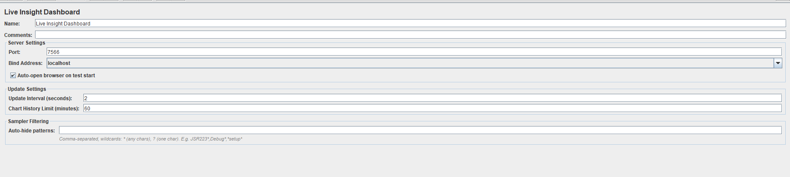
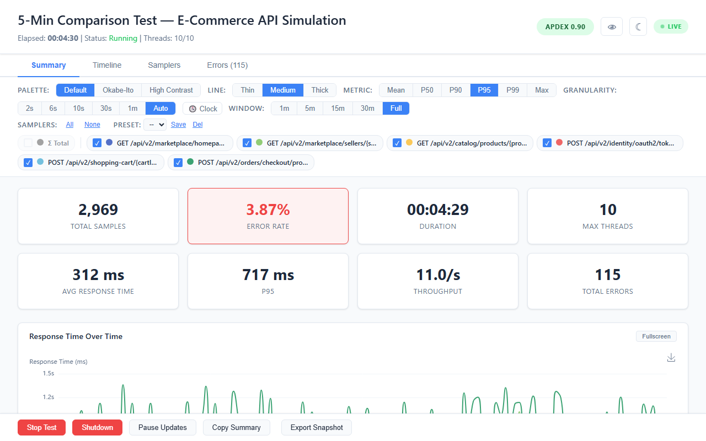
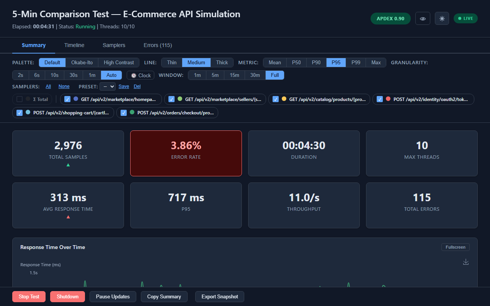
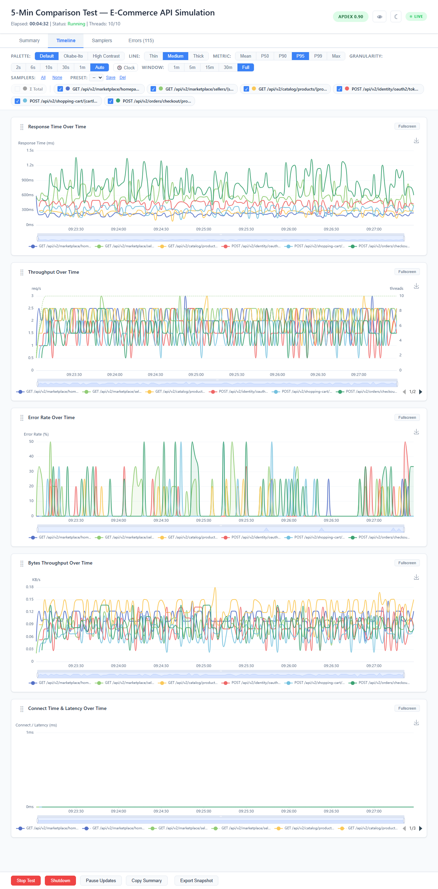
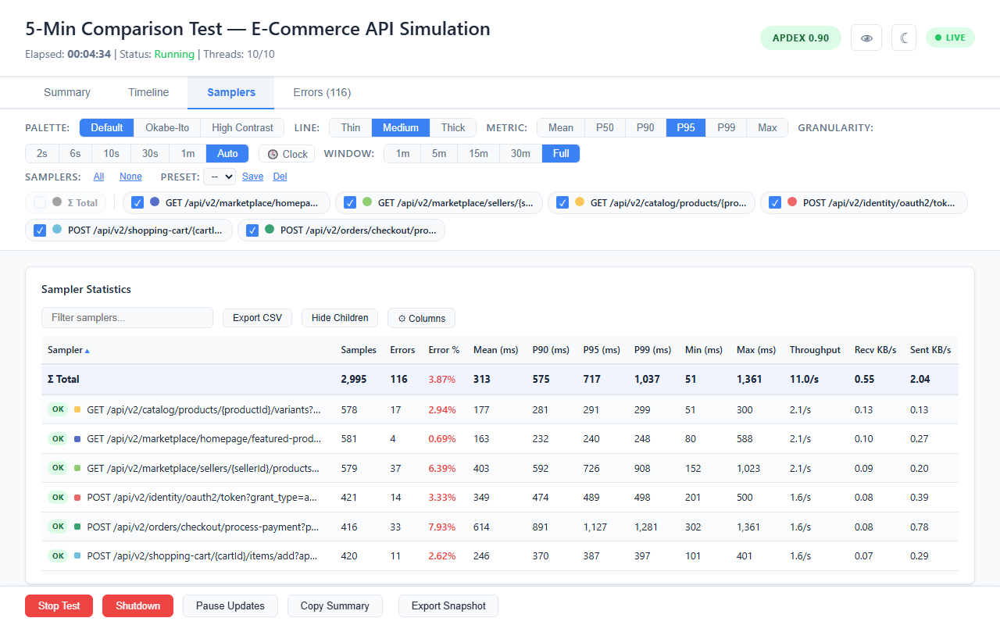
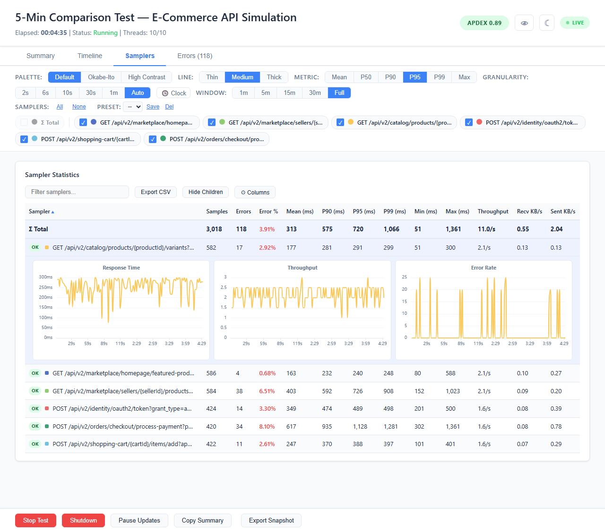
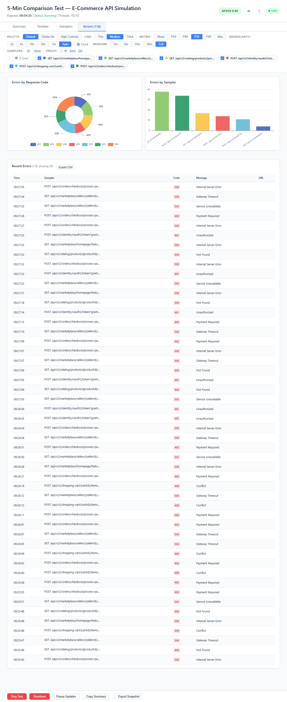
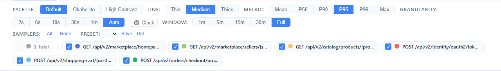

Live Insight Dashboard is an Apache JMeter plugin that shows test metrics live in a browser, in GUI mode or from the command line. It needs no Grafana, no InfluxDB and no other external infrastructure.

Key features:
lib/ext/ folder and run. No external databases, no configuration files, no infrastructure.The dashboard is a single HTML page served by an embedded HTTP server inside JMeter. Data streams via Server-Sent Events (SSE). When the test ends, the server stays alive for post-test review.
Download the plugin JAR from the GitHub Releases page and copy it to JMeter's extension directory. Remove any older jmeter-live-dashboard-*.jar there first:
cp jmeter-live-dashboard-1.6.2.jar $JMETER_HOME/lib/ext/
No other dependencies. The JAR is self-contained.
mvn clean package -DskipTests
cp target/jmeter-live-dashboard-1.6.2.jar $JMETER_HOME/lib/ext/
http://localhost:7566jmeter -n -t test.jmx
The test plan (test.jmx) must contain the Live Insight Dashboard listener — add it in the GUI and save the plan, then run that saved plan in non-GUI mode. The dashboard opens at http://localhost:7566.
With custom settings:
jmeter -n -t test.jmx \
-Jlive.dashboard.port=8080 \
-Jlive.dashboard.bind=0.0.0.0 \
-Jlive.dashboard.update.interval=1
See Configuration for all available properties.
The dashboard has 4 main areas:
Displays (left to right):
Four tabs organize the dashboard:
| Tab | Purpose |
|---|---|
| Summary | At-a-glance metric cards with trends, response time chart |
| Timeline | 5 full time-series charts with zoom sync |
| Samplers | Statistics table with sorting, filtering, inline detail charts |
| Errors | Error breakdown charts and detail table |







A persistent bar below the tabs with two rows:
These settings apply to the time-series charts on every tab. The sampler pills filter the time-series charts only: the Samplers table, the Errors tab and the summary cards always show every sampler. Palette, line thickness, sampler colors, Clock/Elapsed and presets are saved in localStorage; Metric, Granularity, Window and the sampler selection go back to their defaults when the page reloads.
A fixed footer with test controls and export actions:
| Component | Technology |
|---|---|
| Plugin | Java (JMeter listener) |
| Percentiles | Exact, computed as JMeter's Aggregate Report does (at most 0.1% low above 10 s) |
| Charts | Apache ECharts 5.5.0 |
| Communication | Server-Sent Events (SSE) |
| Output | Self-contained HTML dashboard |
| Persistence | localStorage (dark and colorblind mode, palette, line thickness, sampler colors, Clock/Elapsed, chart order, hidden columns, presets) |
Live Insight Dashboard is purpose-built for local development and testing — it gives you instant visibility into your JMeter test while you build, tune, and debug it on your own machine.
By design, the plugin runs an embedded HTTP server on the same machine that executes the test. This keeps setup to zero configuration but comes with trade-offs:
-R) run is counted correctly across all engines, but the Stop and Shutdown buttons act on the local engine only.localhost. You can bind to 0.0.0.0 to allow access from other devices on the same network, but there is no authentication or encryption.live.dashboard.window.max) sets how long the fine-grained chart slots are kept; the 1-minute slots and the totals cover the whole run.These are intentional constraints that keep the plugin lightweight, dependency-free, and ready to use in seconds.